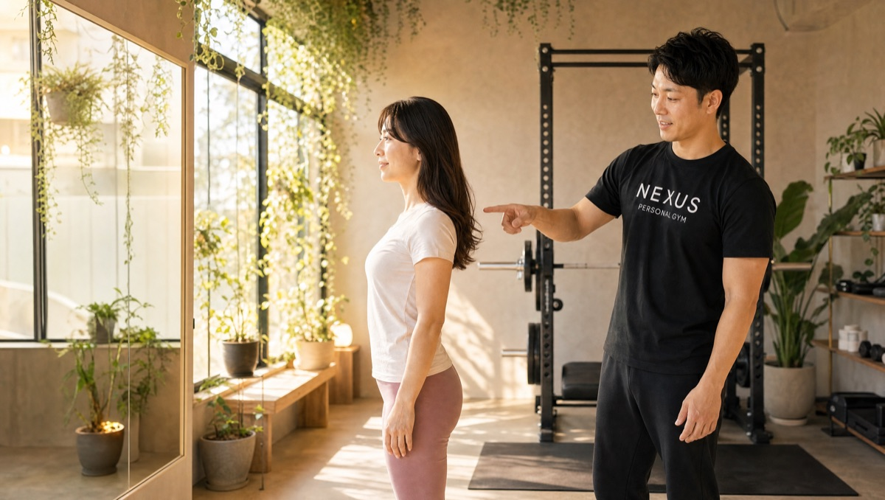
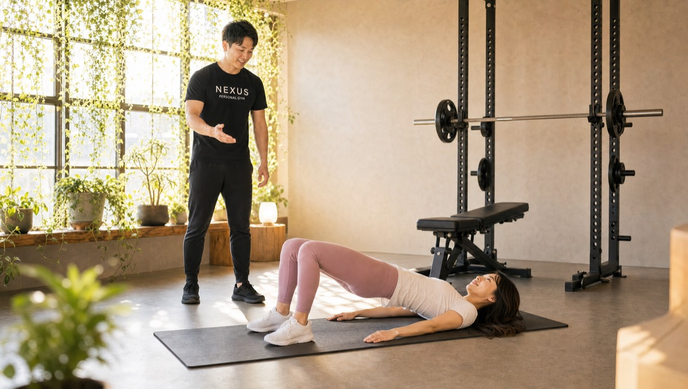

NEXUS Personal Gym ／ 福岡県中央区
NEXUSパーソナルジム 平尾店｜平尾・薬院で"きれいに痩せる"完全個室の隠れ家ジム

西鉄天神大牟田線・西鉄平尾駅が最寄り。天神・薬院にほど近い、美容感度の高いエリアの住宅街にある完全個室の隠れ家パーソナルジムです。女性会員85%。無理な食事制限をせず、肌の調子まで整えながら"きれいに痩せる"指導が支持されています。
- 完全個室
- 手ぶら通いOK
- 女性会員85%
- きれいに痩せる食事指導
- 姿勢・ボディメイク
この店舗の特徴
NEXUS平尾店は、天神・薬院に近い美容感度の高い平尾エリアの住宅街に佇む完全個室のパーソナルジム。大きな看板を出していないため、平尾・薬院・高宮・中央区エリアで「体重を落とすだけでなく、きれいに痩せたい」という女性に選ばれています。過度な糖質制限で体調や肌を犠牲にするのではなく、健康的な食事とトレーニングでシルエットから変えていくのが平尾店の方針。ウェア・タオル・プロテインまで無料提供の手ぶら通いOKで、忙しい毎日でもバッグひとつで続けられます。
きれいに痩せる、が正解

平尾店が大切にしているのは「体重を落とすこと」より「きれいに痩せること」。過度な糖質制限で一時的に数字を落としても、肌荒れや疲れやすさ、リバウンドにつながっては意味がありません。実際に会員のS.さんからは「2ヶ月で5kg減、食事も過度な制限ではなく健康的な体を作るための食事を教えてもらい、肌の調子もかなり良くなった」という声をいただいています。無理をしないから続けられ、続けられるからきれいに変わっていきます。
楽しい！続けられる！
運動経験ほぼゼロでしたが、とても楽しく続けられています！
ダイエット目的で通い始めて2ヶ月ですが、5kg落ちました！食事も過度な制限ではなく、健康的な体を作るための食事を教えてもらってる感じです。肌の調子もかなり良くなったので、ほんとに体にいいことをしてるんだな～と日々実感してます。
トレーナーさんは、体調や気になる事などよく話を聞いて下さるのと、日頃の生活の中で気を付けること･意識することを分かりやすく教えて下さるので、初心者だからこそ、ここに通ってよかった！と、行くたび思えるジムです！
姿勢から変わるシルエット

「痩せた」の第一印象は、体重計の数字ではなく立ち姿で決まります。平尾店では体幹と姿勢を整えるトレーニングを重視し、猫背や反り腰でくずれていたシルエットを内側から立て直します。会員からも「姿勢が良くなった」「体重より先にウエストが細くなった」という声が多く、鏡に映る印象から変わっていくのを実感していただけます。
結婚式・撮影前のボディメイク

結婚式や前撮りを控えた方のボディメイクにも対応しています。ドレスで露出する背中・二の腕・デコルテ、そして後ろ姿を美しく見せるヒップラインを重点的に整え、当日にいちばん映える状態へ仕上げます。天神・薬院の式場やフォトスタジオを利用される会員も多く、本番の日程から逆算してメニューを設計。「いつまでに・どこを」を無料体験で具体的にご相談ください。
まずは無料体験から

初回は60分程度の無料体験。カウンセリングで「どこを・いつまでに・どう変えたいか」をじっくりうかがい、姿勢チェックと実際のトレーニングまで体験できます。無理な勧誘は一切ありません。まずは話だけでも、気軽に来てください。
料金プラン
入会金は通常55,000円、無料体験当日入会で15,000円（税込）に割引。全店舗共通の料金です。
アクセス
- 店舗名
- NEXUSパーソナルジム 平尾店
- 住所
- 〒810-0014
福岡県福岡市中央区平尾2丁目3−15 クロスロード平尾 301 - 最寄り駅
- 西鉄天神大牟田線 西鉄平尾駅
- 営業時間
- 月〜土 8:00〜22:00
定休日：日曜 - 電話番号
- 050-1790-8487
Googleマップの口コミ
出典：Google マップ
NEXUS平尾店はGoogle口コミ101件で★5.0を維持。無理な食事制限なしで肌の調子まで良くなる"きれいに痩せる"指導が、平尾・薬院エリアの女性に支持されています。
20代の頃とは違い、30代に入ってから痩せにくくなってきたのを実感し、自己流では限界を感じて平尾付近でパーソナルジムを探していました。女性一人でも安心して通える雰囲気で、毎回楽しくトレーニングができます。ジム内も清潔で、トレーナーさんとの相性も良く、日々のストレス発散にもなっています！
ダイエットと運動不足解消のため、春からお世話になっています。
手ぶらで行ける手軽さと、わかりやすい料金プランが決め手でした。
ジム自体はコンパクトですが、清潔感があって必要な器具は全て揃っていると思います。
トレーニングは初めてでしたが、正しいフォームや体の動かし方をしっかり丁寧に教えてくれます。
初回のヒアリングで悩みや要望を伝えて、それに合わせてトレーニングの内容も考えてもらえるので、知識がない私でもしっかり頑張れています。
食事のことや他にも分からないことがあったら相談に乗ってもらえるので、それも助かっています。
平尾店のよくある質問
Q平尾店はどこにありますか？最寄り駅は？+
Q平尾・薬院エリアで初心者向けのパーソナルジムを探しています。+
Q平尾・薬院で完全個室のパーソナルジムはありますか？+
Q平尾店の営業時間は？仕事帰りでも通えますか？+
Q平尾店の予約はどうやって取りますか？+
Q平尾・薬院周辺で女性が通いやすいジムを探しています。+
Q結婚式や前撮りまでに引き締めたいのですが間に合いますか？+
Q天神・薬院からも通えますか？+
よくある質問（全店共通）
料金・制度などNEXUS全店に共通するご質問です。さらに詳しくは110問のFAQをご覧ください。
Q料金はいくらですか？+
Q手ぶらで通えますか？+
Qキャンセルはいつまでできますか？+
Q食事指導はありますか？+
Qトレーナーはどんな人ですか？+
Q女性会員は多いですか？+
Q体験の流れは？+
NEXUSパーソナルジムの特徴・料金をもっと見る